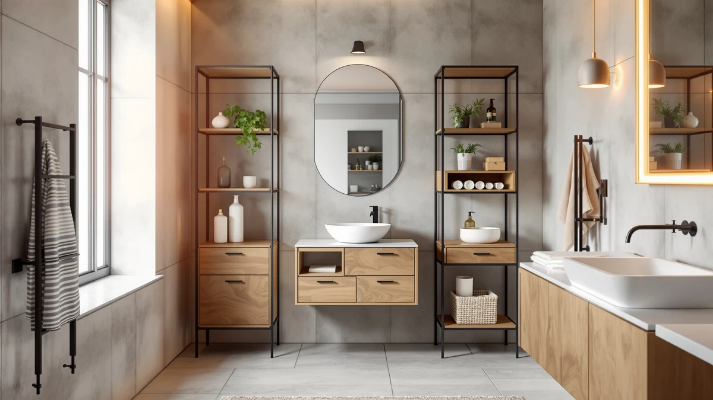

Best Bathroom Stool with Storage (2026)
Prices and picks verified as of September 2026. Independent, reader-supported reviews.


Quick Answer
If you're looking for the best bathroom stool with storage, the smarter buy for most small bathrooms is a dedicated organizer that uses cabinet or floor space you're already wasting. The GeeBom Under Sink Organizer Pull gives you the most usable storage for the price, with an adjustable height that fits most vanities.
Our pick: GeeBom Under Sink Organizer Pull, $35.99 Check Price on Amazon
Bottom line: our top pick is the GeeBom Under Sink Organizer at $35.99. The best budget option is the Sevenblue 2 Pack Under Sink Organizer at $15.99.
Things to Know Before You Buy
- Most searches for the best bathroom stool with storage are looking for a way to store more without adding floor clutter, and an under-sink organizer or slim cabinet almost always holds more than a stool with a built-in bin.
- Measure your vanity's interior height and width before ordering. Several picks here, including the GeeBom and both REALINN organizers, adjust to fit a range of cabinet sizes.
- Metal-and-wood construction shows up across every product in this guide because it resists the moisture and temperature swings that warp plastic or particleboard over time.
- Pull-out and L-shaped organizers work around plumbing pipes, so measure the space on either side of your P-trap, not just the total cabinet width. Our guide to organizing under-sink storage covers the layout details in more depth.
- If you need visible, freestanding storage instead of under-sink space, a floor cabinet like the SUPER DEAL or a drawer cabinet like the GRUSIGN gives you a piece of furniture you can also use as a stand-in seat or step.
If you're shopping for the best bathroom stool with storage, you're usually trying to solve one problem: too many toiletries, towels, and cleaning supplies, and not enough places to put them that don't look like clutter. A single stool with a bin underneath rarely holds enough to matter once you factor in shampoo backups, cleaning sprays, and extra toilet paper. That's why this guide focuses on the storage furniture that actually clears a bathroom counter: under-sink pull-out organizers, floor cabinets, and drawer units that use space you already have.
We compared seven options ranging from $15.99 to $79.99, and the GeeBom Under Sink Organizer Pull comes out on top for most bathrooms. It adjusts from 13.8 to 16.9 inches tall, so it fits under a wide range of sink cabinets, and its metal-and-wood build holds up better than the all-plastic bins that tend to crack after a year of humidity. If your cabinet is unusually narrow or you need more visible storage instead of hidden under-sink space, the picks further down cover those cases too.
Every recommendation here comes from comparing published specs, materials, pricing, and verified buyer feedback. We do not run a fake testing lab, and we think that's a more honest way to frame a research-based buying guide than pretending otherwise. The sections below cover exactly how we picked and compared these products, followed by a full breakdown of each one.
Why You Should Trust Us
Best Bathroom Storage covers organizers, cabinets, and small-space storage solutions for US bathrooms, and this guide is written and reviewed by Ilane Tall, our home and bath expert. We built our shortlist for the best bathroom stool with storage by pulling every relevant under-sink organizer, floor cabinet, and drawer unit from our product database, then narrowing the list based on published dimensions, materials, and price. We are a research-based review site. We compare specs, pricing, and verified owner reviews instead of buying and testing products ourselves, and we don't run a fake testing lab or claim experience we don't have.
How We Picked
We started by looking at every under-sink organizer, storage cabinet, and floor cabinet marketed toward small bathrooms, since these solve the same clutter problem as a bathroom stool with storage but hold significantly more. We excluded anything without clear dimensions listed, since a storage product that doesn't publish its measurements is a gamble in a bathroom where inches matter. We also cut products that relied entirely on plastic construction, since metal-and-wood frames consistently outlast plastic in humid conditions. From there we prioritized products that offered either an adjustable fit (to work around different cabinet sizes and plumbing layouts) or a distinct form factor, like a freestanding cabinet, so this guide covers real alternatives rather than seven versions of the same organizer. For the broader shopping criteria we apply across every storage category, see our bathroom storage buying guide.
How We Compared
We compared these seven products side by side on four factors: usable storage capacity relative to footprint, build material, price per cubic inch of storage, and fit flexibility (whether a product adjusts to different cabinet widths or works only in one fixed size). We cross-referenced manufacturer specs against verified buyer reviews to flag any products where owners reported different dimensions or durability than advertised. Where reviewers consistently mention the same strength or flaw across multiple listings, we noted it in the pros and cons below.
Our Picks

GeeBom Under Sink Organizer Pull
What we like
- Height adjusts from 13.8 to 16.9 inches, so it fits a wider range of vanity cabinets than fixed-height organizers
- Metal and wood frame instead of all-plastic construction, which holds up better under a humid sink cabinet
- Pull-out design gives you full access to items stored at the back without unloading the whole shelf
Flaws but not dealbreakers
- At 11.8 inches wide, it won't clear unusually narrow cabinets with tight plumbing on both sides
- Assembly involves several small parts, so budget a few extra minutes compared to a single-piece bin
| Material | Metal / wood |
| Size | 11.8"W x 15.9"D x 13.8-16.9"H |
The GeeBom is the closest thing in this lineup to a universal fit, and that's the main reason it's our pick for the best bathroom stool with storage alternative. The adjustable height means you're not stuck guessing whether it will clear your P-trap or supply lines before you order, and the pull-out shelf keeps everything visible instead of buried behind a curtain of cleaning bottles. Reviewers consistently mention that the frame feels sturdier than the price suggests, especially compared to similarly priced all-plastic organizers that tend to crack at the joints within a year.
Where it falls short is width. At just under 12 inches, it's built for standard single-sink vanities, not the wider double-sink cabinets some larger bathrooms have. If your cabinet is unusually tight or oddly shaped around the pipes, measure twice before ordering, since the adjustable height won't help if the frame itself doesn't clear the sides. For most single-sink bathrooms, though, it holds noticeably more than a stool-style storage bin at a comparable price.

SUPER DEAL Modern Bathroom Floor
What we like
- Freestanding footprint means no cabinet cutout or under-sink measuring required
- 31.6-inch width gives it more surface and storage volume than most under-sink organizers
- Doubles as a low side table or plant stand if you rearrange your storage needs later
Flaws but not dealbreakers
- Takes up visible floor space, which matters in a bathroom that's already tight on walking room
- Doesn't hide contents the way a closed cabinet or under-sink shelf does
| Material | Metal / wood |
| Size | 23.6 inches x 31.6 inches x 11.8 inches |
The SUPER DEAL Modern Bathroom Floor cabinet is the option for anyone who wants storage they can see rather than storage tucked under the sink. At 23.6 by 31.6 by 11.8 inches, it's sized more like a piece of furniture than a bin, and it gives you enough surface area to double as a display shelf for towels or a plant on top. If a bathroom stool with storage appealed to you because you wanted something you could set things on, this gets closer to that use case than a pure organizer does.
The tradeoff is floor space. Because it sits in the open rather than inside a cabinet, it works best in bathrooms with a spare corner rather than ones where every square foot is already accounted for. Owners report that the metal-and-wood build feels stable enough to hold stacked towels or a small basket without wobbling, which is the main durability concern with lightweight freestanding units at this price.

GRUSIGN Bathroom Cabinet Modern Bathroom
What we like
- Three separate drawers let you sort smaller items instead of piling everything into one bin
- Enclosed door hides bulkier supplies like extra toilet paper or cleaning bottles
- Metal and wood construction matches the sturdier build quality you'd expect at this price point
Flaws but not dealbreakers
- At $79.99, it costs roughly twice as much as the next most expensive pick in this guide
- Larger footprint than the under-sink organizers, so it needs its own floor or counter space
| Material | Metal / wood |
| Size | Three Drawers&One Door |
The GRUSIGN Bathroom Cabinet is the pick for anyone who wants to sort their storage rather than just contain it. The three drawers separate small items like cotton swabs and hair ties from the bulkier supplies you'd stash behind the single door, which beats digging through a single open bin every time you need something specific. Reviewers consistently point out that the drawer glides feel solid rather than flimsy, a common failure point on cheaper multi-drawer units.
The obvious drawback is price. At $79.99, it's more than double what you'd pay for a single under-sink organizer, and you're paying for organization and finish rather than raw storage volume. If you don't need separated compartments and just want maximum space for the money, one of the under-sink options below gets you there for less. But if drawer-level sorting matters to you, this is the most furniture-grade option in the lineup.

REALINN Under Sink Organizer L-Shaped
What we like
- Comes as a 2-pack, which works out cheaper per organizer than buying two single units separately
- L-shaped frame is built to wrap around plumbing instead of forcing you to work in front of or behind it
- Metal and wood construction matches the durability of the pricier single-unit picks
Flaws but not dealbreakers
- Overkill if you only have one sink and don't need a second organizer
- The L-shape fits standard P-trap layouts but won't necessarily match an unusually configured cabinet
| Material | Metal / wood |
| Size | 2 Pack |
We call the REALINN L-Shaped our budget pick because of what it costs per organizer, not the sticker price. At $43.99 for two units, you're paying roughly $22 each, which undercuts buying two of the single-unit organizers in this guide separately. That math matters most if you have a double-sink vanity and need to organize both sides, since most under-sink organizers are designed and priced for a single cabinet.
The L-shaped design is built specifically to wrap around a P-trap and supply lines rather than sit flush against the back of the cabinet, so it works in the kind of plumbing layout that leaves a straight-sided organizer wobbling on one edge. If you only have a single sink, buying a pack of two doesn't make sense financially, and you're better off with one of the single-unit picks. For double-sink bathrooms, though, this is the most cost-effective way to organize both sides at once.

REALINN Under Sink Organizer Pull
What we like
- Priced under $30 while keeping the same metal-and-wood build as the pricier options
- Pull-out shelf design gives full access to the back of the cabinet without reaching over other items
- Single-unit sizing means you're not paying for a second organizer you don't need
Flaws but not dealbreakers
- Doesn't adjust in height the way the GeeBom does, so measure your cabinet clearance first
- Limited to single-sink cabinets, since it isn't sold as a multi-pack
| Material | Metal / wood |
| Size | 1 Pack |
The REALINN Under Sink Organizer Pull is the straightforward option if you have one sink, one cabinet, and no need for the adjustability or higher price of our top pick. At $28.99, it uses the same metal-and-wood build quality as the more expensive picks in this guide, and the pull-out shelf gives you full access to the back of the cabinet, which matters more than it sounds like it should once you've spent a year fishing bottles out of the back of a fixed shelf.
The main tradeoff compared to the GeeBom is flexibility. This organizer doesn't adjust in height, so you'll want to confirm your cabinet's interior clearance before ordering rather than assuming it will fit. Owners report that once it's in place, it stays put without the wobbling that can happen with lighter, all-plastic pull-out shelves. For a single-sink bathroom on a tighter budget, it covers the basics without cutting corners on materials.

Sevenblue 2 Pack Under Sink
What we like
- Lowest price in this guide at $15.99 for two units
- Compact 12.8-inch size fits smaller cabinets that larger organizers can't
- Still uses a metal-and-wood frame rather than dropping to all-plastic at this price
Flaws but not dealbreakers
- Smaller footprint means less total storage volume than the larger single-unit organizers
- Not built for heavier items like large cleaning bottles or multi-roll toilet paper packs
| Material | Metal / wood |
| Size | 12.8 Inch |
At $15.99 for two, the Sevenblue is the cheapest way into this category by a wide margin, and it earns a spot here because it doesn't cut the one corner that actually matters: material. It still uses a metal-and-wood frame rather than the flimsier all-plastic construction you'd expect at this price, which is the main reason budget organizers usually fail early. The compact 12.8-inch size also makes it a fit for smaller cabinets that can't accommodate the bulkier options in this guide.
The obvious limitation is capacity. This is a smaller organizer, so it holds less than the GeeBom or REALINN picks, and it's not the choice if you're storing bulky items like gallon-sized cleaning bottles or multi-pack toilet paper. For renters or anyone furnishing a first apartment bathroom on a tight budget, though, two working organizers for under $16 is hard to beat.

Under Sink Organizer and Storage
What we like
- Largest usable capacity of the under-sink options in this guide
- Handles bulk-bought items like family-size cleaning supplies or multi-pack toilet paper without crowding
- Metal and wood build matches the durability standard set by the rest of the lineup
Flaws but not dealbreakers
- Needs a deep cabinet to make sense of its "large" sizing, so it won't fit every vanity
- Overkill for a single person's toiletries if you don't buy supplies in bulk
| Material | Metal / wood |
| Size | Large |
The GEMWON Under Sink Organizer and Storage is built for volume. Listed simply as "large," it's sized to handle bulk purchases, family-size cleaning supplies, and multi-pack toilet paper without the crowding you'd get from the more compact organizers in this guide. If your household goes through supplies fast enough that you buy in bulk, this is the pick that actually has room for it.
That same size is the catch. It needs a deep cabinet to work, so measure your under-sink clearance carefully before ordering rather than assuming "large" will fit any vanity. If you live alone or don't stockpile supplies, the extra volume goes unused and a smaller, cheaper organizer like the Sevenblue or REALINN Pull makes more sense. For bigger households, it holds more per dollar than any other pick here.
Quick Comparison
The table below lines up all seven picks for the best bathroom stool with storage alternative by material, price, and best use case.
| Product | Material | Price | Rating | Best for | Get it |
|---|---|---|---|---|---|
| GeeBom Under Sink Organizer Pull | Metal / wood | $35.99 | 4 | Most vanities | View on Amazon → |
| SUPER DEAL Modern Bathroom Floor | Metal / wood | $38.99 | 4 | Visible floor storage | View on Amazon → |
| GRUSIGN Bathroom Cabinet Modern Bathroom | Metal / wood | $79.99 | 4 | Drawer-level organization | View on Amazon → |
| REALINN Under Sink Organizer L-Shaped | Metal / wood | $43.99 | 4 | Double-sink vanities | View on Amazon → |
| REALINN Under Sink Organizer Pull | Metal / wood | $28.99 | 4 | Single-sink cabinets | View on Amazon → |
| Sevenblue 2 Pack Under Sink | Metal / wood | $15.99 | 4 | Tight budgets and small cabinets | View on Amazon → |
| Under Sink Organizer and Storage | Metal / wood | $30.99 | 4 | Deep cabinets and bulk supplies | View on Amazon → |
Is a bathroom stool with storage better than an under-sink organizer?
A storage stool works fine as a single seat with a small bin underneath, but it rarely holds more than a few items.
What should I look for in bathroom storage furniture?
Measure your cabinet or floor space before buying, check the material (metal and wood combinations hold up better than plastic in humid bathrooms), and confirm the weight capacity if you plan to store heavier items like cleaning supplies…
The Competition
We also looked at a number of dedicated bathroom stools with built-in storage compartments before narrowing this guide to under-sink organizers and cabinets. Most of the ones we researched sacrificed storage volume for the seating function, with compartments too shallow to hold much more than a few small bottles. Since the majority of buyers searching for a bathroom stool with storage are trying to solve a clutter problem rather than looking for extra seating, we prioritized products that maximize storage per dollar instead.
We also considered over-the-toilet shelving units and slim rolling carts. Over-the-toilet shelves work well for towels and open display but don't hide clutter the way an enclosed organizer or cabinet does, and rolling carts tend to have a narrower weight capacity than the fixed under-sink options here. Both remain solid choices for specific bathroom layouts, which is why we cover them separately in our guide to over-toilet storage rather than folding them into this comparison.
If you came here looking for the best bathroom stool with storage, the GeeBom Under Sink Organizer Pull is our overall recommendation, with the REALINN and Sevenblue organizers as strong alternatives depending on your cabinet size and budget.